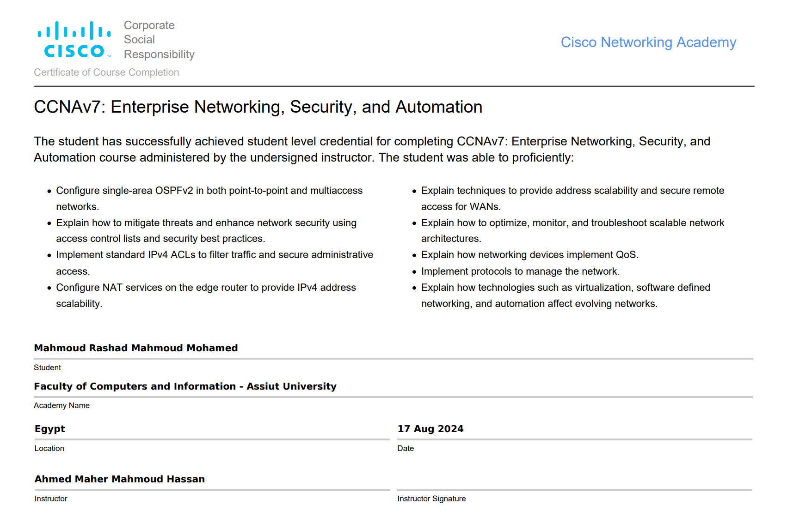
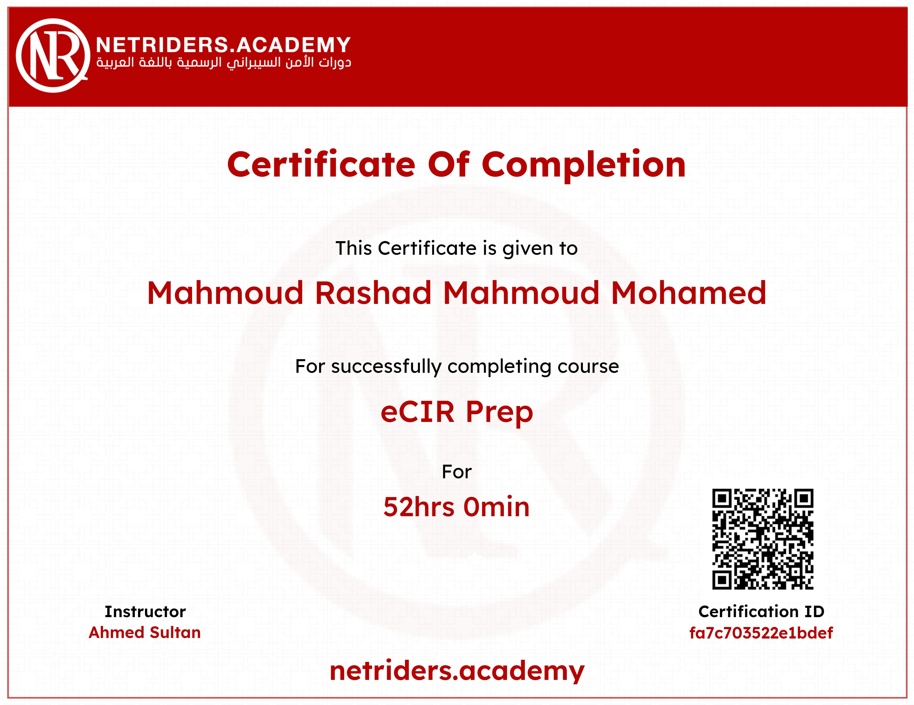

04. Certifications
Industry recognized validation of my security knowledge and practical skills.

Cisco Certified Network Associate (CCNA)
Cisco

eCIR
Netriders

TryHackMe Certifications
Pre Security, SOC 1
Other Certifications & Courses: Cyber Security Training (ITI & CyberTalents), Network Security (NTI), Red Hat System Administration I, eCIR (Netriders)